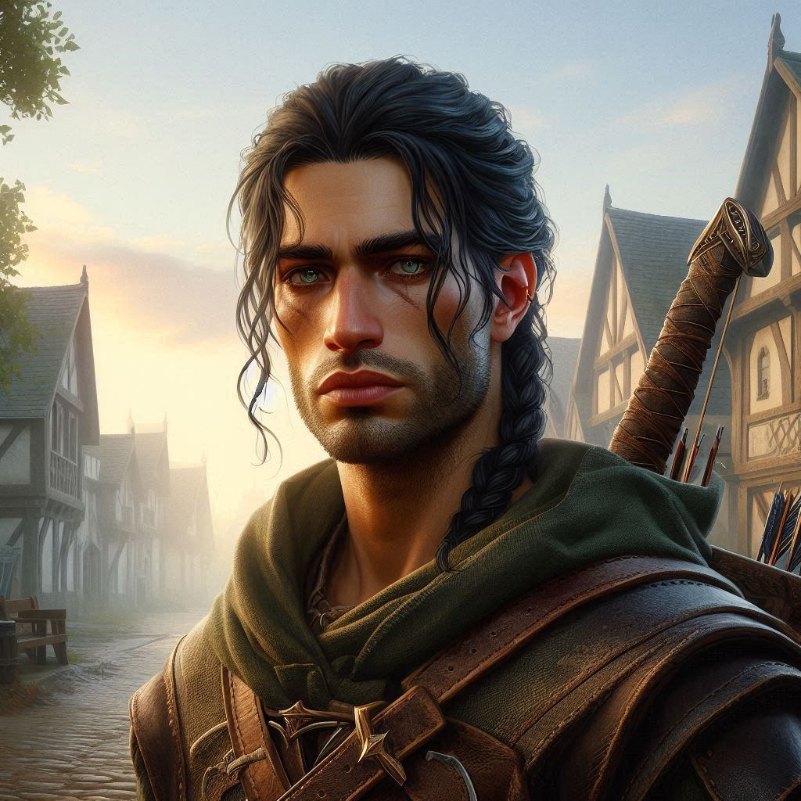
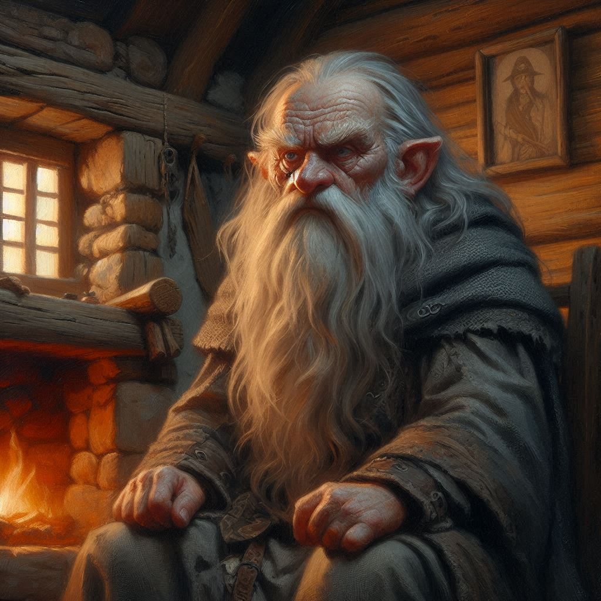
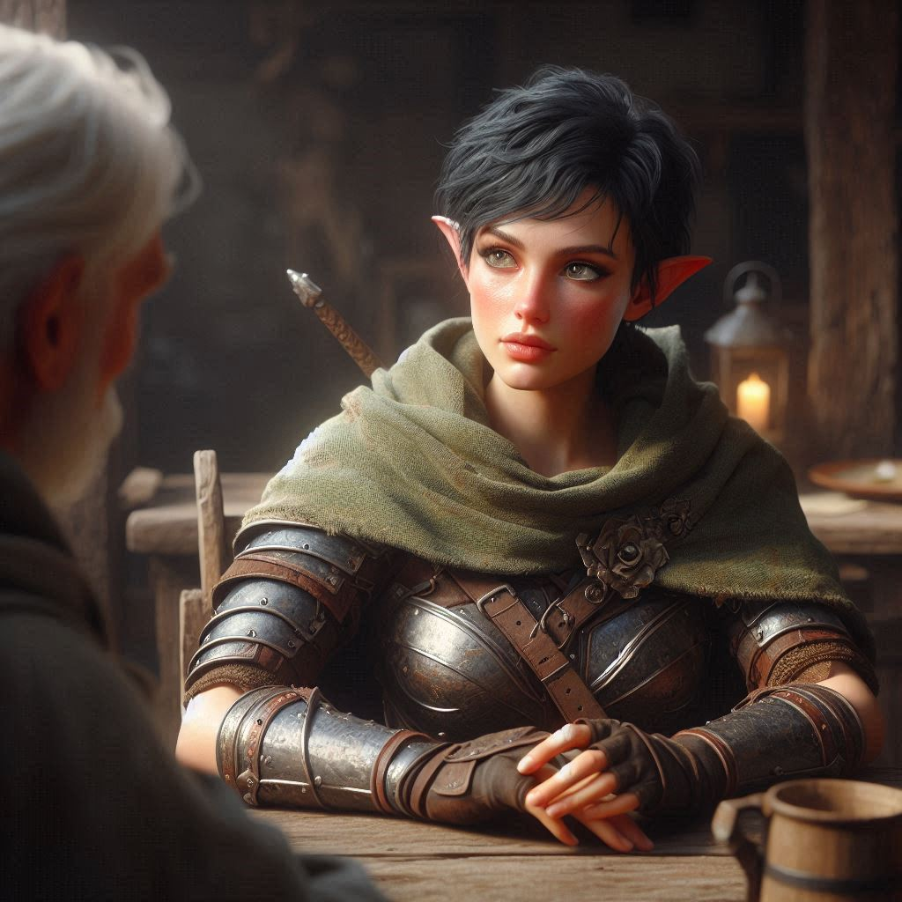
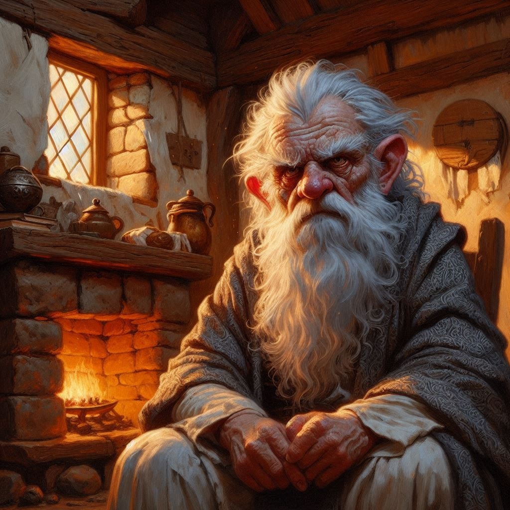

Onyx the Elder
The early morning sun casts a warm glow over Belladonna, but the weight in your chest remains cold and heavy. Today is the day you must face someone you’ve avoided for most of your life—the village Elder, Onyx. The idea of talking to him churns your stomach with an anxiety you can’t quite shake. He and Baider, your adoptive father, share a tangled, secretive past, and though you’ve never been told the full story, you know enough to tread carefully. You’ve always avoided Onyx, fearing that getting too close would stir something best left buried.
But you don’t have a choice now. If you want to understand the ancient lore of Hemlock Caverns and what lies ahead, you need Onyx’s knowledge. And more than that, you need his approval—the thought gnaws at you, though you’d never admit it out loud. Your footsteps are slow as you wind through the village toward his cottage, your mind racing through what you’ll say. What if he dismisses you? What if he sees through you and finds you lacking?
“Kira!”
The familiar voice pulls you from your thoughts, and you turn to see Elias jogging toward you, his dark hair catching the light, his expression a mix of concern and determination. Your heart skips a beat, but you push the feeling aside. You can’t afford to be distracted—not today.
“Are you heading to see the Elder?” he asks, stopping beside you. His voice is gentle, but there’s an intensity in his gaze that makes your pulse quicken.
You nod, suddenly feeling awkward under his scrutiny. “Yeah. I need to ask him about the Hemlock Caverns.”
Elias watches you for a moment, then steps closer. “Let me come with you. We can face him together.”
There’s a warmth in his offer, a sense of safety that tempts you to say yes. But the temptation quickly gives way to something harder, something more stubborn inside you. You can’t lean on Elias for this. You’ve spent too long trying to prove you can stand on your own, that you don’t need anyone’s help.
“I… I need to do this alone,” you say, your voice firmer than you feel.
The tension between you flares as Elias’s expression tightens, disappointment flickering in his eyes. He doesn’t say anything at first, just nods slowly. “Alright. But if you change your mind…”
“I won’t.” You force a smile, but it feels brittle. “I’ll be fine.”
Elias doesn’t press further, though the unspoken feelings between you hang in the air like a storm cloud. “Good luck, Kira,” he says softly, stepping back, and the ache in your chest sharpens as you watch him walk away.
With a sigh, you turn back toward Onyx’s cottage, pushing Elias from your thoughts. This isn’t about him. You’re here for answers, not for distractions.
Onyx’s cottage sits at the edge of the village, weathered but sturdy, much like the dwarf himself. As you approach the door, your nerves twist tighter, but you force yourself to knock.
The door creaks open, and there he is—Onyx, the village Elder, with his long, graying beard and sharp, knowing eyes. He looks at you for a moment, his gaze weighing you the way it always does, as if he can see through your bravado to the fears you try so hard to hide.
“Kira,” he says, his voice gravelly but not unkind. “I wasn’t expecting you.”
You shift awkwardly, glancing at the ground before meeting his eyes. “I need to talk to you. It’s about Hemlock Caverns.”
Onyx’s expression shifts, his brow furrowing. He steps aside, nodding for you to enter. The inside of his home smells of woodsmoke and something earthy, comforting. You take a seat at the small wooden table, your hands resting uneasily in your lap.
“So,” Onyx begins, settling into a chair opposite you. “You’re a brave young ranger now. And you’re off to Hemlock Caverns… for what? Treasure? Power? Glory?”
You clear your throat and meet the old dwarf’s eyes. “A mission for the magistrate. Jorsh the Betrayer.”
“Oh?” Onyx makes a face something between a smile and a sneer. “For love then?”
You ignore his jibe. “I need to know about the lore of Hemlock Caverns,” you say, your voice more steady than you expected. “I’m going to arrest Jorsh. He’s hiding there, and… there’s something more. Something dangerous.”
Onyx’s eyes narrow slightly. “You’ve heard the rumors, then. About the dark forces in those caverns.”
You nod, feeling a shiver of unease. “I need to know if they’re true.”
For a long moment, Onyx is silent, his gaze distant as if recalling memories buried deep in his past. Then he leans forward, his voice low and serious. “The Hemlock Caverns are older than this village. Older than me. There are stories… of things locked away down there. Things that should never be disturbed.”
His words send a chill through you, but you press on. “But Jorsh… he’s already disturbed them, hasn’t he?”
Onyx’s eyes harden. “That boy has always been reckless. But what he’s doing now is beyond recklessness—it’s madness.” He pauses, studying you. “And you think you can stop him?”
The weight of his question presses down on you, and for a moment, doubt creeps in. But you can’t let it win. “I have to try.”
Onyx leans back, stroking his beard thoughtfully. “You’re braver than your father ever was, I’ll give you that.” His words sting, a reminder of the complicated relationship between Onyx and Baider—the history they’ve never shared with you, the shadow it casts over your life. But you don’t rise to the bait.
“What can you tell me about the magic in the caverns?” you ask, steering the conversation back to your mission.
Onyx’s gaze sharpens again, and for the first time, you see a flicker of something like respect. “The caverns are filled with wards. Ancient ones, from before the days of men. They were meant to keep certain… things sealed away. Dark things. If Jorsh has broken those wards, it means he’s tampering with powers he can’t control.”
You swallow, your heart pounding. “And what happens if he succeeds?”
“I don’t think he will unless he has help,” Onyx sniffs.
“Help? From whom?”
“Rumor has it he found a map along with spells to disable the wards, but I happen to know the map he stole is only half of the map.” Onyx looks out the window, either lost in thought or unwilling to make eye contact with you. You’re not sure which.
“Do you know where the other half of the map is?” You feel some hope. “Maybe I can make sure he never gets the other half of the map with the other disenchantment spells.”
“Ah. Good thought,” Onyx grunts. “But it’s not that simple. No one around here would know which spells open which portals. Open the wrong portals and…”
“And?”
Onyx’s face darkens. “If Jorsh opens the wrong door in those caverns, Kira… he’ll unleash a force that could destroy more than just Belladonna. The caverns hold more than just treasure. They hold nightmares.”
“Tell me, Onyx,” you say gravely. “I don’t know what bad blood lies between you and the blacksmith. It’s no business of mine. But if you know who has the other half of the map, tell me now so I can find it, and–”
“And what?” Onyx stands, his voice deeper and louder than you can ever remember hearing. “You? You’ll take the map to the bowels of hell and make sure the right doors are opened? You barely know how to wipe your own nose, Kira!”
You glower at him, trying not to let his insults kindle the fire of your insecurities. “Sure, Onyx. Maybe a crippled old dwarf and a cowardly blacksmith could do better,” you spit. You stare at his bristling mustache and eyebrows, his bloodshot eyes like embers in a fire pit. Finally, he grumbles something and sits down, looking out the window once more.
“The royal library.” Onyx’s words are barely a whisper.
“The royal library?” You put your hands on your hips, shaking with adrenaline and surprised that your bravado hit the mark. “The other half of the map is in the royal library?”
“Yeah, but you’ll never find it,” Onyx hisses. “It’s hidden. Protected. And even if you do find it, you won’t be able to use it. You’re no magic user.”
“Thanks Onyx,” you say with some sincerity. “I’ll find it. As for using it, I’ll cross that bridge when I get to it.” You turn and walk out his front door, feeling somewhat triumphant.
“Kira!” Onyx is standing again.
You turn around.
“There’s more you should know,” Onyx growls.
“More? What more?”
“This isn’t just about Jorsh,” Onyx whispers gruffly. “People in high places want this power. Rumor has it that the Minister of Trade has a stake in the outcome of this misadventure.”
“The Minister of Trade?” You search your memories. Jorsh’s father was in a dispute with the Trade Ministry. Could it be related?
“And even higher, perhaps,” Onyx says in a low register, taking a step toward you. You didn’t think his voice could get any lower or more quiet, but it does. “The royal family is rumored to be involved.”
“Then why is the Magistrate of Belladonna sending me?” You put your chin on your fist, lost in thought.
“Blackmail. Political intrigue. Be careful, child.” The old dwarf heaves a heavy sigh. “It’s a dangerous world out there.”
His words hang in the air as you rise to leave, your mind swirling with everything he’s told you. You wave good-bye over your shoulder, but his parting words echo in your thoughts as you step off the shaded porch and into the sunlight. You’re not alone. But for now, it feels like you are.
As you walk back through the village, the weight of your task presses down on you. You’ll face whatever is waiting in those caverns—alone or not. But as your thoughts drift back to Elias, to the look in his eyes when you turned him down, you wonder if you’ve made the right choice.